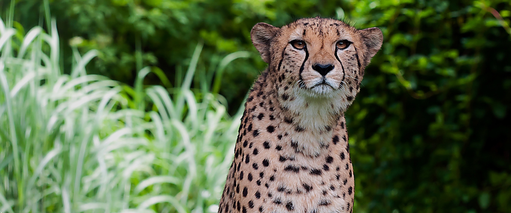

Гепарды в Family Zoo
Гепард
Заметно отличается от других кошачьих. Тело стройное, с развитой мускулатурой и практически без жировых отложений, кажется даже хрупким. У гепарда небольшая голова, высоко расположенные глаза и маленькие закруглённые уши — то есть аэродинамическое построение тела, что служит для лучшей обтекаемости во время скоростного бега. Также гепард имеет грудную клетку и лёгкие большого объёма, что также содействует интенсивному дыханию во время скоростного бега. Окраска песочно-жёлтая, с разбросанными по всему телу мелкими чёрными пятнами, по бокам морды — тонкие чёрные полосы. Масса взрослого гепарда — от 40 до 65 килограмм, длина тела — от 115 до 140 сантиметров, довольно массивный хвост имеет длину до 80 сантиметров. Высота в холке в среднем от 75 до 90 сантиметров. Когти частично втяжные, что не характерно для большинства кошачьих и кроме гепарда наблюдается лишь у кота-рыболова, суматранской и ириомотейской кошек.